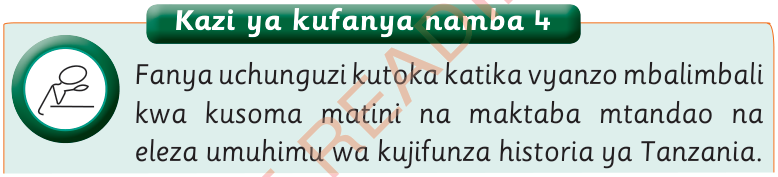

Kazi ya kufanya namba 4
Fanya uchunguzi kutoka katika vyanzo mbalimbali kwa kusoma matini na maktaba mtandao na eleza umuhimu wa kujifunza historia ya Tanzania.

Fanya uchunguzi kutoka katika vyanzo mbalimbali kwa kusoma matini na maktaba mtandao na eleza umuhimu wa kujifunza historia ya Tanzania.
